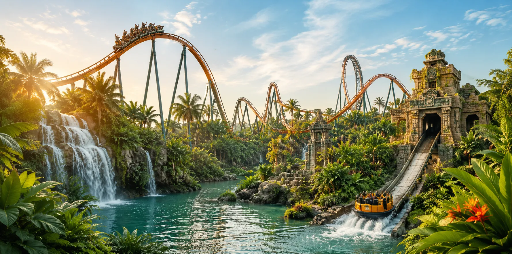
Des parcs mythiques aux montagnes russes les plus spectaculaires du monde.
Toboggans, lagons et expériences aquatiques à découvrir autour du monde.
Des lieux remarquables pour découvrir la faune et vivre une expérience animalière unique.
Tyroliennes, jungle, grottes et expériences spectaculaires au cœur de la nature.
Des grands resorts aux parcs réputés pour leurs montagnes russes, découvrez une sélection de parcs d'attractions qui peuvent devenir le point de départ d'un voyage.
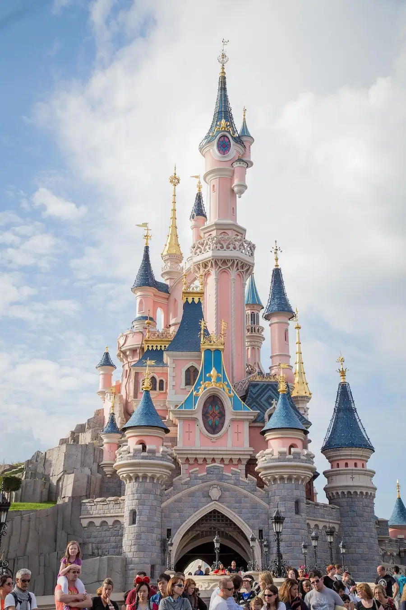
Deux parcs à thème, des attractions emblématiques et un univers qui peut facilement devenir le cœur d'un séjour de plusieurs jours aux portes de Paris.
🎢 Disneyland Park et Walt Disney Studios proposent des univers très différents, des attractions familiales aux expériences plus immersives.
💡 Sa proximité avec Paris permet facilement de combiner le parc avec quelques jours dans la capitale.
📍 Découvrir Paris →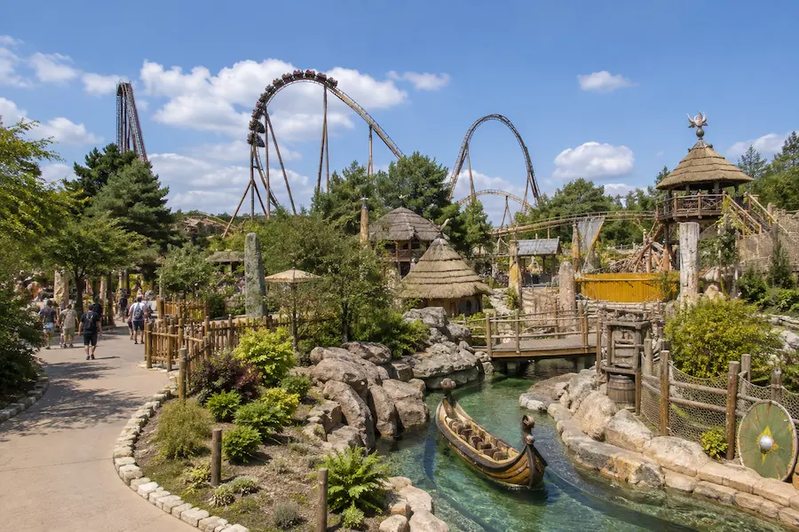
Un parc français emblématique mêlant attractions familiales, univers inspirés de la bande dessinée et montagnes russes à sensations.
🎢 Le parc propose plusieurs grandes attractions à sensations ainsi que des zones adaptées aux familles.
💡 Situé au nord de Paris, il peut facilement être intégré à un séjour dans la capitale.
📍 Découvrir Paris →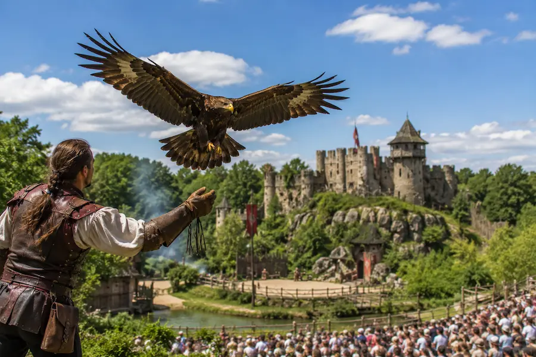
Un parc à part dans le paysage européen, connu pour ses grands spectacles historiques et ses mises en scène monumentales.
🎭 Ici, l'expérience repose principalement sur de grands spectacles, des décors historiques et des mises en scène immersives.
💡 Prévoir au minimum une journée complète, voire davantage pour découvrir confortablement les différents spectacles.
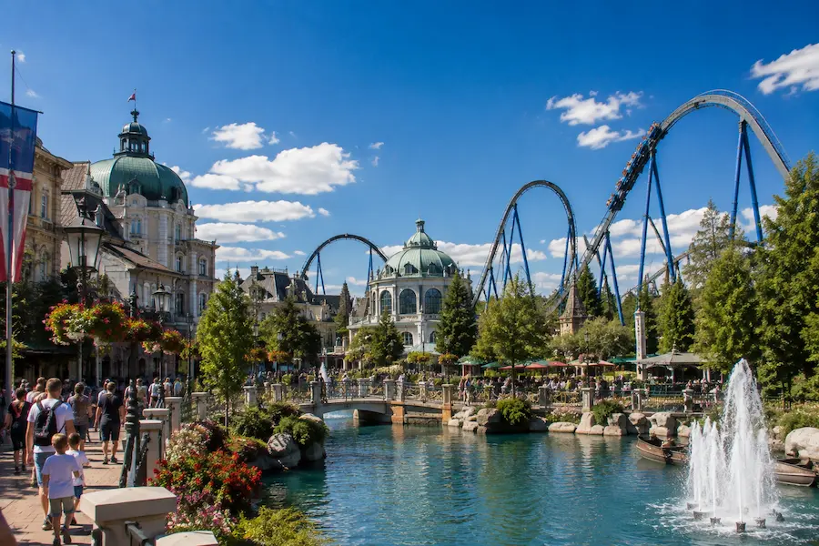
L'un des plus grands parcs d'attractions d'Europe, avec de nombreux quartiers thématiques et une impressionnante variété d'attractions.
🎢 Europa-Park combine montagnes russes, attractions familiales et quartiers inspirés de différents pays européens.
💡 Le resort peut facilement justifier un séjour de plusieurs jours, notamment en combinant le parc avec son univers aquatique.
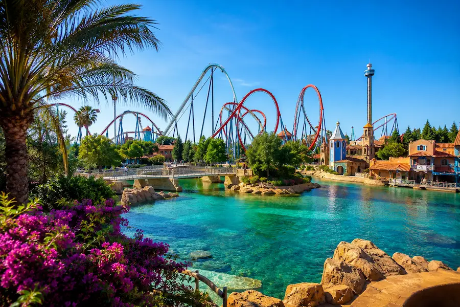
Un grand resort méditerranéen réunissant attractions, montagnes russes et univers thématiques à proximité de Barcelone.
🎢 PortAventura propose plusieurs univers thématiques et certaines des attractions à sensations les plus connues d'Espagne.
💡 Sa situation permet de combiner facilement parc, littoral méditerranéen et séjour à Barcelone.
📍 Découvrir Barcelone →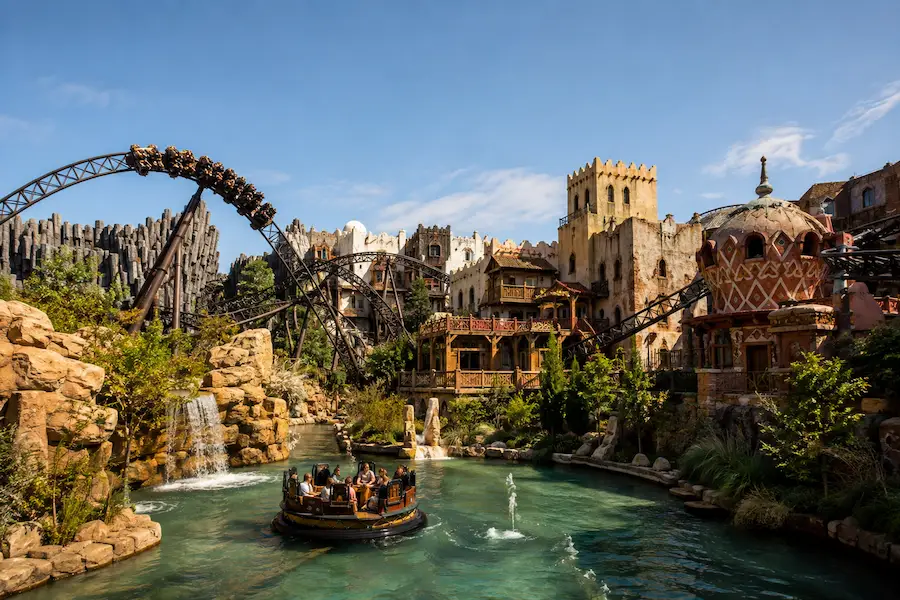
Un parc réputé pour ses décors très immersifs, ses zones thématiques compactes et plusieurs attractions à sensations majeures.
🎢 Le parc mise particulièrement sur l'immersion et l'intégration des attractions dans des décors très travaillés.
💡 Une excellente étape pour les amateurs de montagnes russes lors d'un voyage en Allemagne.
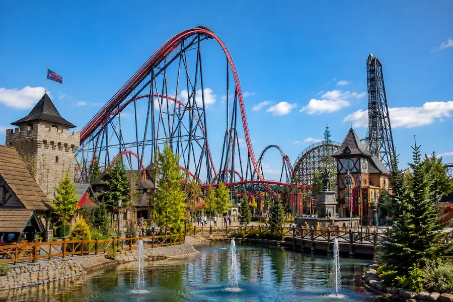
Un immense parc polonais devenu une référence européenne pour les amateurs de montagnes russes et d'attractions à sensations.
🎢 Energylandia se distingue par une concentration impressionnante de montagnes russes et une offre particulièrement développée pour les amateurs de sensations.
💡 Le parc peut notamment s'intégrer à un voyage dans le sud de la Pologne autour de Cracovie.
🇪🇺 Des grands resorts européens aux parcs spécialisés dans les sensations fortes, l'Europe offre une diversité exceptionnelle d'expériences. Certains peuvent constituer une excursion pendant un city-trip, tandis que d'autres méritent plusieurs jours de voyage à eux seuls.
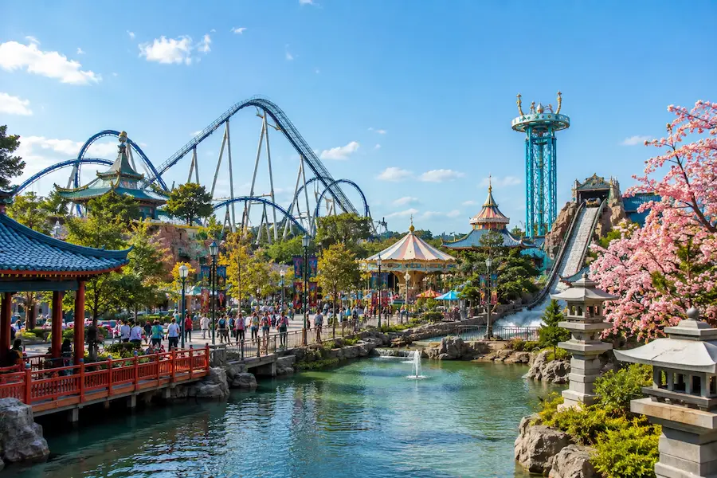
L'un des resorts Disney les plus réputés au monde, réunissant deux grands parcs aux portes de Tokyo.
🎢 Tokyo Disneyland reprend l'esprit du parc Disney classique, tandis que Tokyo DisneySea propose un univers maritime spectaculaire et très différent des autres parcs Disney.
💡 Le resort peut facilement être intégré à un voyage à Tokyo en lui consacrant une ou plusieurs journées.
📍 Découvrir Tokyo →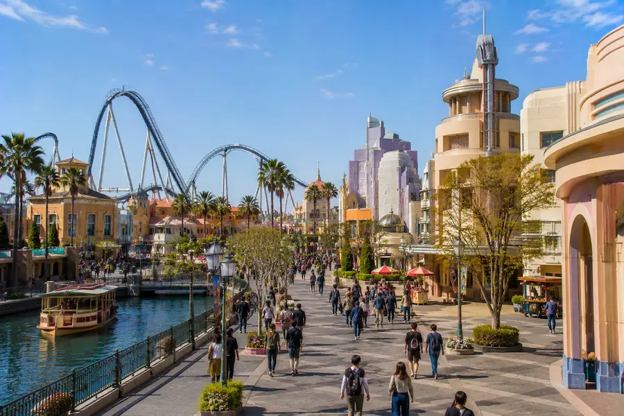
L'un des grands parcs asiatiques, réputé pour ses univers immersifs inspirés du cinéma, des jeux vidéo et de grandes franchises internationales.
🎮 Le parc propose notamment des zones immersives et de nombreuses attractions mêlant décors spectaculaires et technologies.
💡 Une excellente raison d'intégrer Osaka à un itinéraire au Japon entre Tokyo et Kyoto.
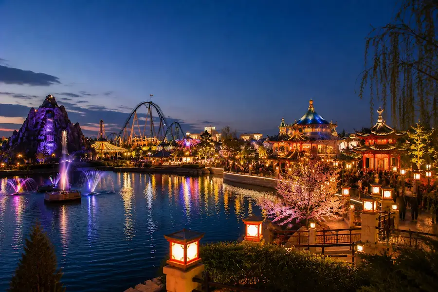
Un resort Disney moderne qui revisite plusieurs grands classiques de la marque avec des attractions et des espaces conçus spécifiquement pour Shanghai.
🎢 Le parc se distingue par son immense château central et plusieurs attractions utilisant des technologies particulièrement immersives.
💡 Il peut devenir une journée forte lors d'un séjour consacré à Shanghai.
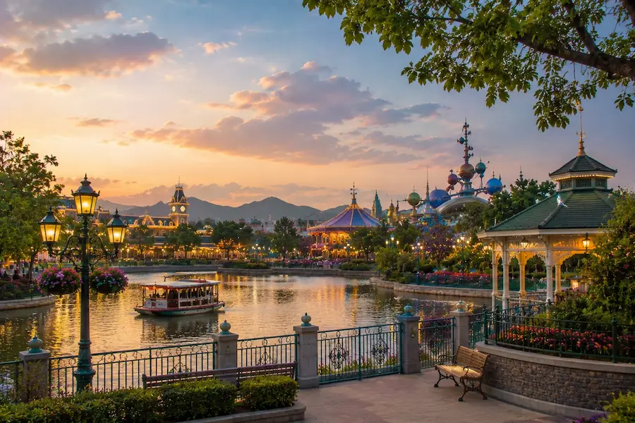
Un resort Disney plus compact, installé dans un environnement montagneux à proximité de Hong Kong.
🎢 Sa taille plus accessible permet de l'intégrer facilement à un séjour à Hong Kong tout en retrouvant les grands univers Disney.
💡 Une journée peut constituer une parenthèse originale au cours d'un voyage dans la métropole.
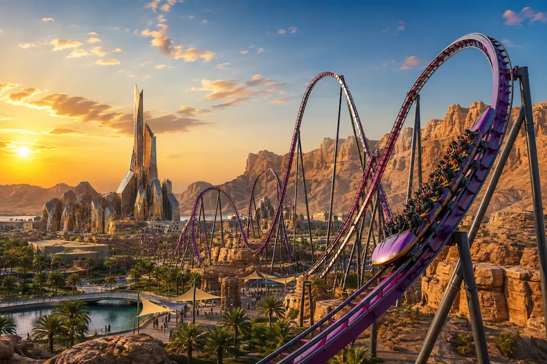
Un immense parc nouvelle génération développé à Qiddiya, près de Riyad, avec une forte orientation vers les attractions à sensations et les expériences spectaculaires.
🎢 Le parc fait partie du gigantesque projet de loisirs Qiddiya City et ambitionne de devenir l'un des nouveaux grands pôles mondiaux du divertissement.
⚡ Parmi ses attractions phares figure Falcon's Flight, une montagne russe conçue à une échelle exceptionnelle.
💡 Qiddiya pourrait progressivement faire de la région de Riyad une nouvelle destination internationale pour les voyages autour des loisirs et du divertissement.
🎢 De Disneyland Paris à Orlando, du Japon aux nouveaux projets de loisirs de la région de Riyad, certains parcs peuvent devenir bien plus qu'une simple activité : ils peuvent être le point de départ d'un véritable voyage. Vidolta sélectionne des expériences suffisamment remarquables pour justifier une étape, plusieurs jours ou même une destination entière.
Des lagons tropicaux aux toboggans les plus spectaculaires, découvrez une sélection de parcs aquatiques qui peuvent devenir une expérience majeure d'un voyage.
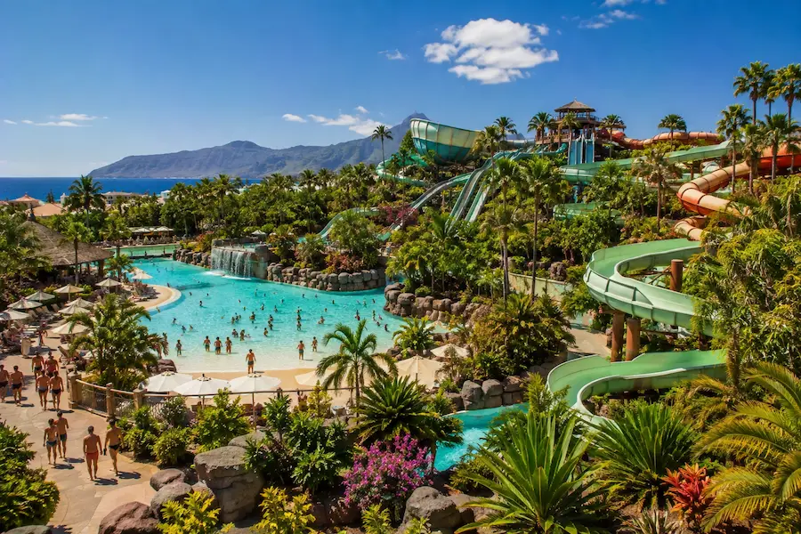
Un parc aquatique spectaculaire à l'ambiance tropicale, devenu l'une des expériences emblématiques d'un séjour à Tenerife.
💦 Toboggans à sensations, rivière, immense piscine à vagues et décors inspirés de la Thaïlande composent une expérience très immersive.
💡 Siam Park peut facilement devenir l'une des journées fortes d'un voyage aux Canaries.
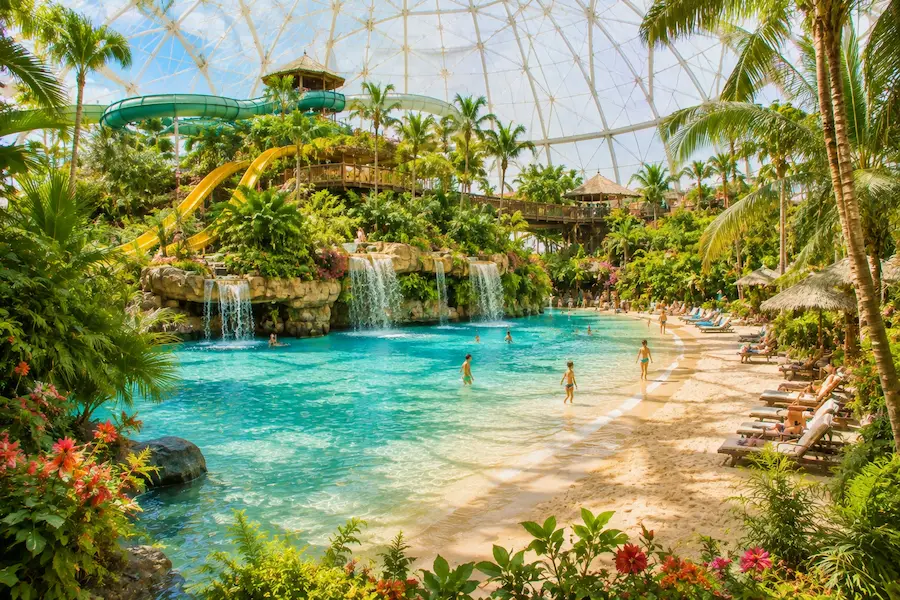
Un gigantesque univers tropical couvert installé dans un ancien hangar aéronautique, avec plages, piscines et attractions aquatiques.
🌊 Sa particularité est de recréer une ambiance tropicale sous une immense structure couverte, permettant d'en profiter quelle que soit la saison.
💡 Une expérience très différente des parcs aquatiques traditionnels et facilement intégrable à un voyage en Allemagne.
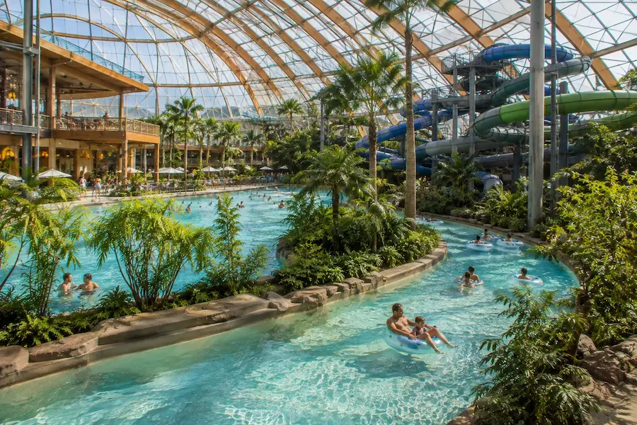
Le grand univers aquatique du resort Europa-Park, avec de nombreuses attractions intérieures et extérieures inspirées de l'univers nordique.
💦 Toboggans, piscines, rivière et espaces thématiques permettent de consacrer une journée entière à Rulantica.
💡 Son principal intérêt pour un voyage Vidolta est évident : combiner Europa-Park et Rulantica au cours d'un même séjour à Rust.
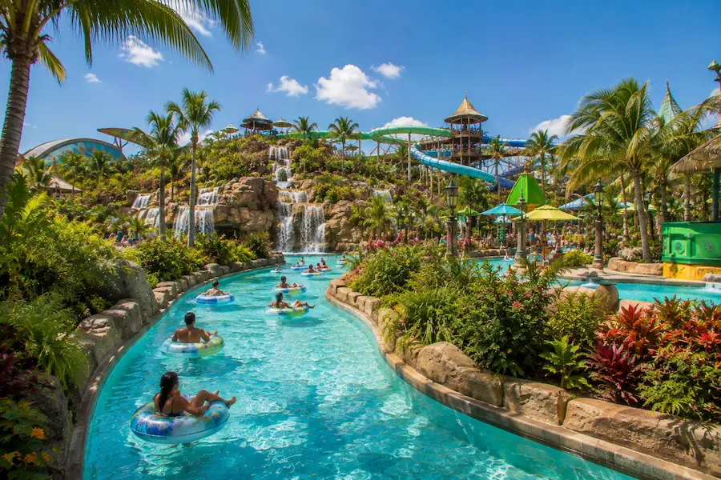
Le parc aquatique d'Universal Orlando combine ambiance tropicale, attractions à sensations et un immense volcan devenu son symbole.
🌋 Le volcan Krakatau domine le parc et sert de décor à plusieurs expériences aquatiques et attractions majeures.
💡 Il complète parfaitement plusieurs journées consacrées aux parcs Universal lors d'un voyage à Orlando.
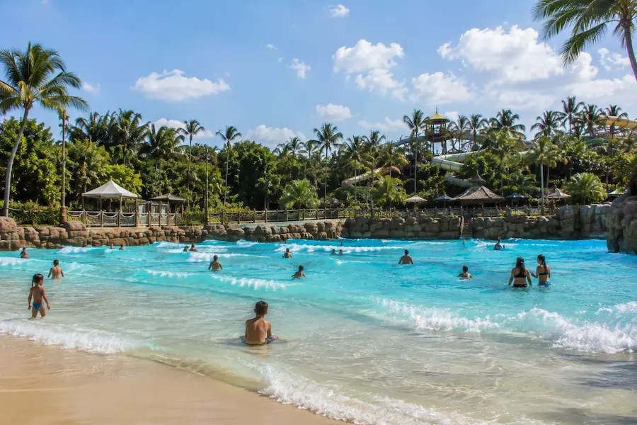
Un parc aquatique de Walt Disney World imaginé autour d'un paradis tropical bouleversé par une immense tempête.
🏄 Le parc est notamment connu pour son immense piscine à vagues, sa rivière tranquille et ses attractions familiales.
💡 Une journée plus aquatique permet de varier les expériences pendant un long séjour consacré à Walt Disney World.
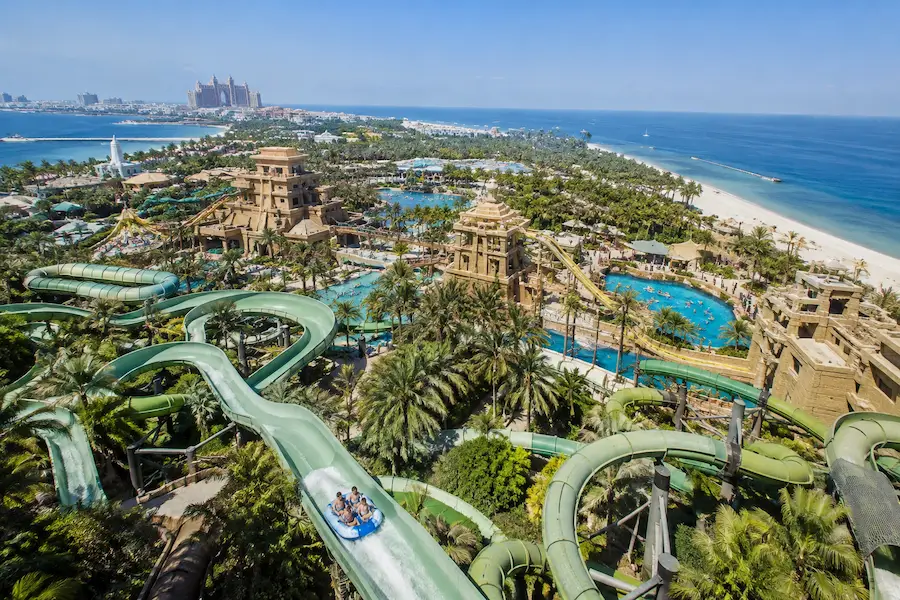
Un gigantesque parc aquatique installé autour d'Atlantis The Palm, réunissant attractions spectaculaires, espaces familiaux et plage.
💦 Aquaventure se distingue par l'ampleur de son offre et peut facilement occuper une journée entière lors d'un séjour à Dubaï.
💡 Son emplacement sur Palm Jumeirah permet de l'intégrer naturellement à la découverte de la ville.
📍 Découvrir Dubaï →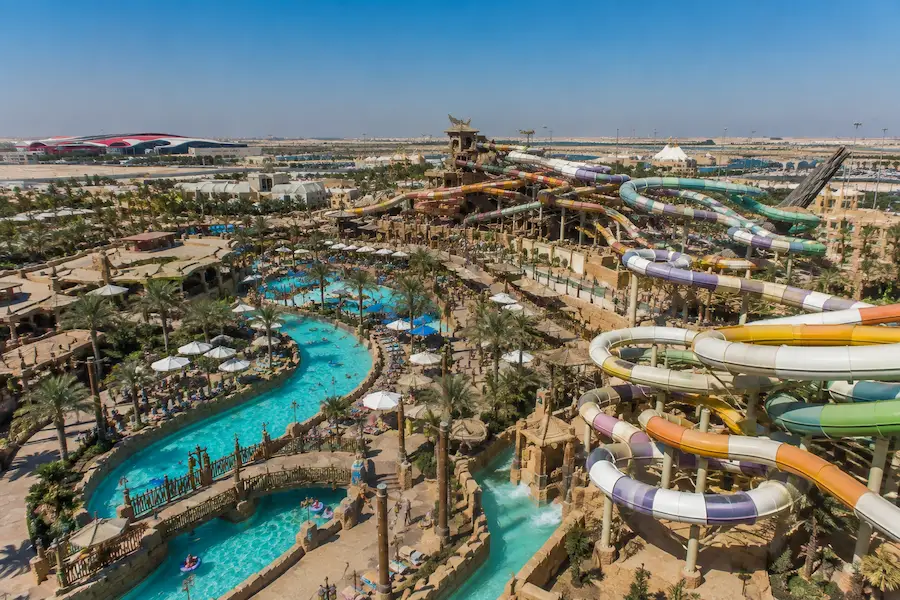
Un grand parc aquatique situé sur Yas Island, au cœur de l'un des principaux pôles de loisirs d'Abu Dhabi.
💦 Le parc réunit de nombreuses attractions aquatiques, des expériences à sensations et des espaces destinés aux familles.
💡 Yas Island permet de combiner plusieurs expériences de loisirs au cours d'un même séjour à Abu Dhabi.
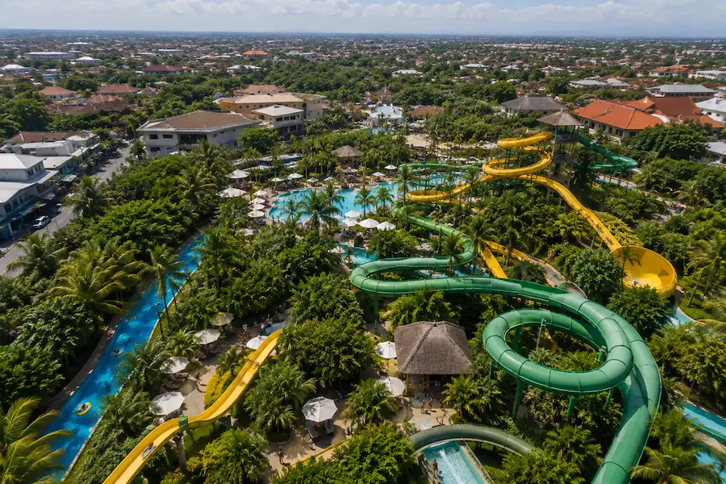
Un parc aquatique tropical installé au cœur de Bali, mêlant végétation, détente et attractions à sensations.
🌿 Son environnement tropical lui donne une identité très différente des grands resorts aquatiques d'Orlando ou du Moyen-Orient.
💡 Une expérience facile à intégrer à quelques jours dans le sud de Bali.
💦 De Tenerife à Orlando, de Dubaï à Bali, certains parcs aquatiques sont devenus de véritables attractions de destination. Vidolta sélectionne ceux qui apportent une expérience suffisamment forte pour mériter une place dans un voyage.
Des grands zoos internationaux aux parcs animaliers les plus immersifs, découvrez des lieux remarquables où la faune devient une véritable expérience de voyage.
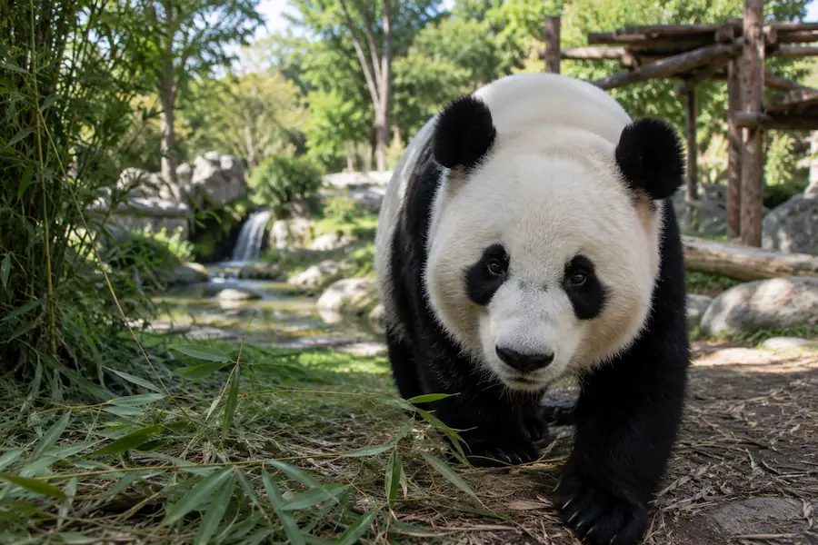
L'un des zoos les plus connus de France, avec une grande diversité d'espèces et plusieurs espaces immersifs répartis dans un vaste domaine.
🐼 Beauval est notamment connu pour ses pandas géants, mais le parc rassemble également de nombreuses espèces venues du monde entier.
💡 Sa taille justifie facilement une journée complète, voire davantage pour profiter du parc sans se presser.
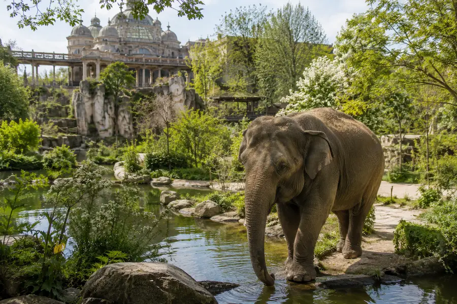
Un vaste parc animalier belge connu pour ses décors immersifs, ses grands espaces et ses univers inspirés de différentes régions du monde.
🌍 Le parc se distingue par une scénographie très poussée qui donne parfois l'impression de voyager d'un continent à l'autre.
💡 C'est une destination qui peut facilement occuper une journée entière lors d'un séjour en Belgique.
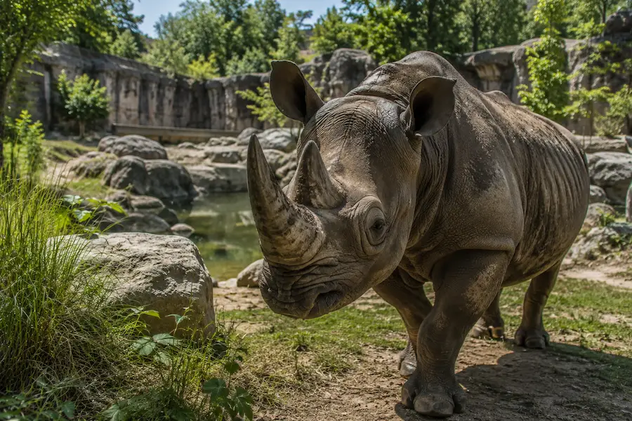
Un parc animalier installé dans un décor troglodytique spectaculaire, avec de grands espaces pensés pour favoriser l'immersion.
🪨 Le relief, la végétation et les anciennes carrières donnent au parc une identité très différente des zoos traditionnels.
💡 Une belle étape à intégrer à un voyage dans l'ouest de la France.
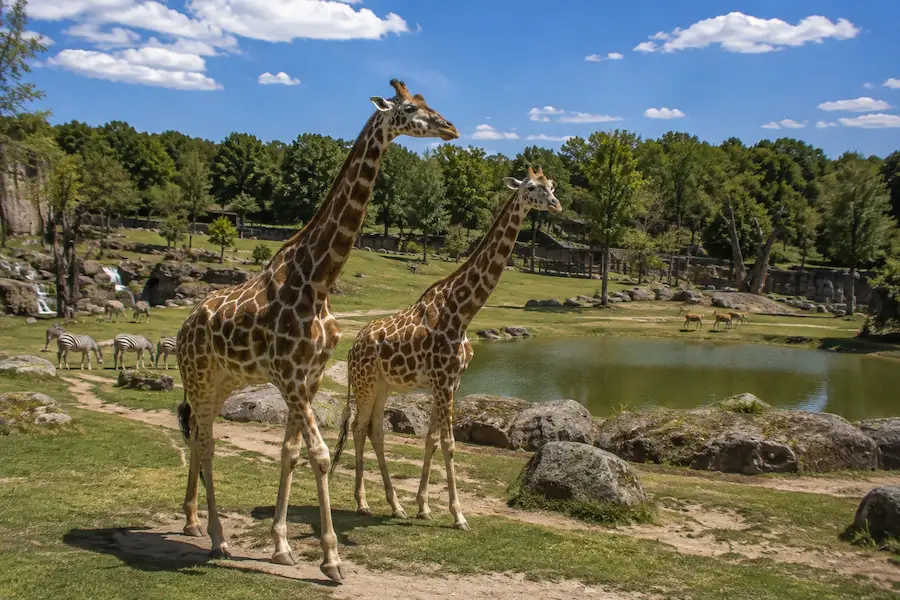
Un parc animalier français connu pour la diversité de ses espèces et son approche immersive autour de plusieurs grands univers.
🦁 Le parc rassemble des espèces emblématiques venues de plusieurs continents dans des espaces thématiques variés.
💡 Il constitue une excellente sortie lors d'un séjour dans l'ouest de la France.
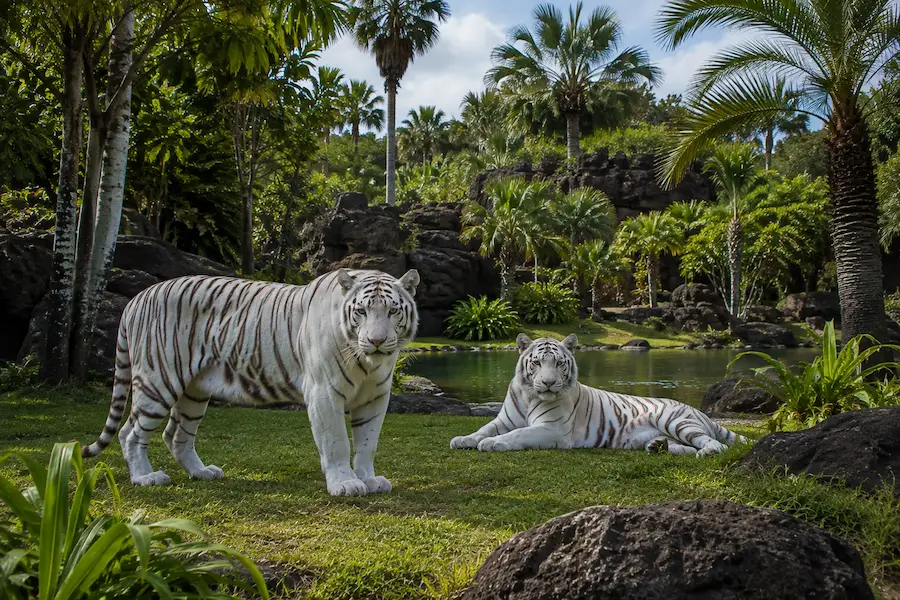
Un grand parc animalier de Tenerife devenu l'une des attractions majeures de l'île, avec une collection particulièrement variée.
🦜 Le parc est notamment connu pour ses oiseaux exotiques, ses grands espaces animaliers et ses installations très soignées.
💡 Avec Siam Park, Loro Parque renforce fortement l'intérêt de Tenerife comme destination loisirs.
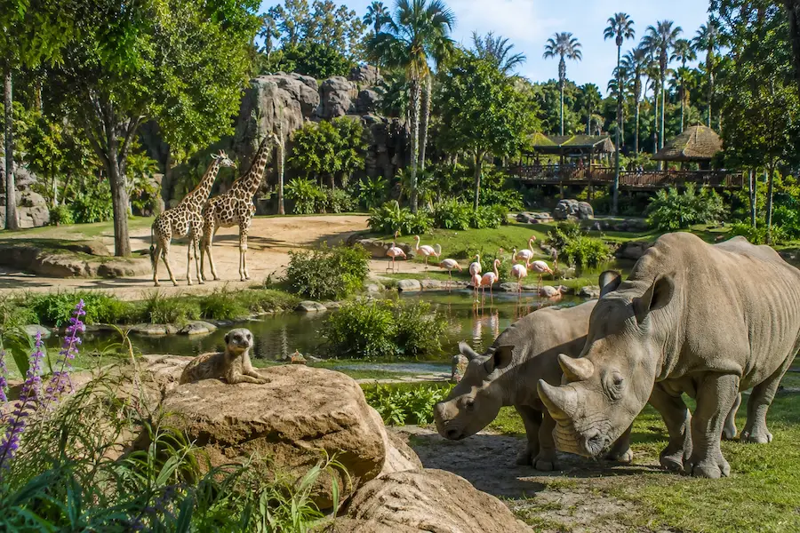
L'un des zoos les plus célèbres au monde, installé dans un immense parc paysager au cœur de San Diego.
🌿 Le zoo est réputé pour ses grands espaces végétalisés et la diversité exceptionnelle des espèces présentées.
💡 Il peut parfaitement s'intégrer à plusieurs jours de découverte de San Diego et de la Californie du Sud.
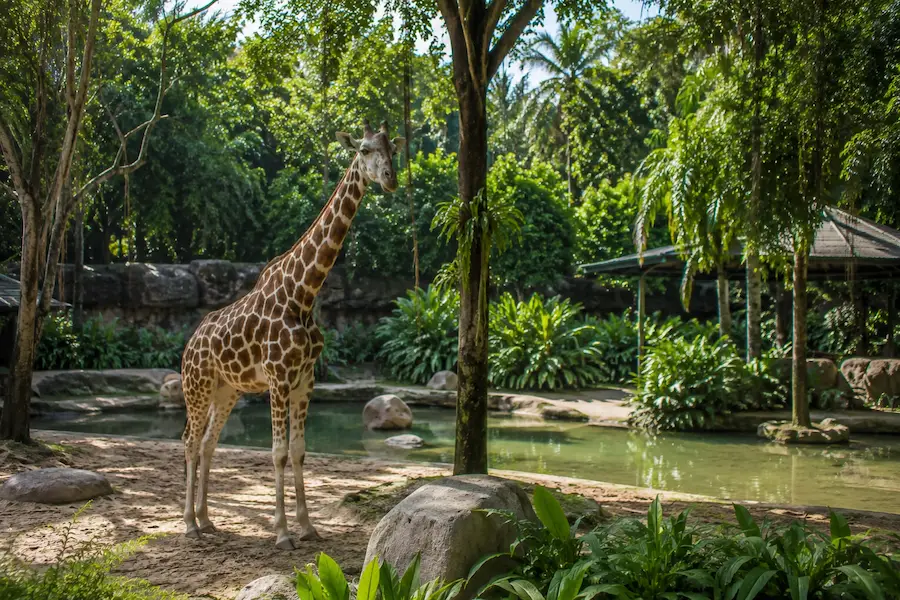
Un zoo tropical réputé pour ses espaces ouverts, sa végétation luxuriante et son approche immersive de la découverte animale.
🌴 L'environnement tropical donne au parc une atmosphère très différente des grands zoos européens ou américains.
💡 Il peut facilement faire partie des grandes expériences d'un séjour à Singapour.
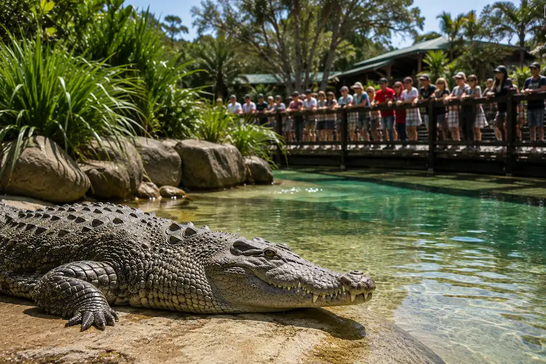
Un parc animalier emblématique du Queensland, fortement associé à la faune australienne et aux grands espaces naturels du pays.
🐨 Kangourous, koalas, crocodiles et nombreuses autres espèces permettent de découvrir une grande partie de la faune australienne.
💡 Une étape très cohérente lors d'un voyage sur la côte est australienne.
Tyroliennes au-dessus de la jungle, rivières souterraines, lagons naturels et expériences en pleine nature : découvrez des parcs où l'aventure fait partie du voyage.
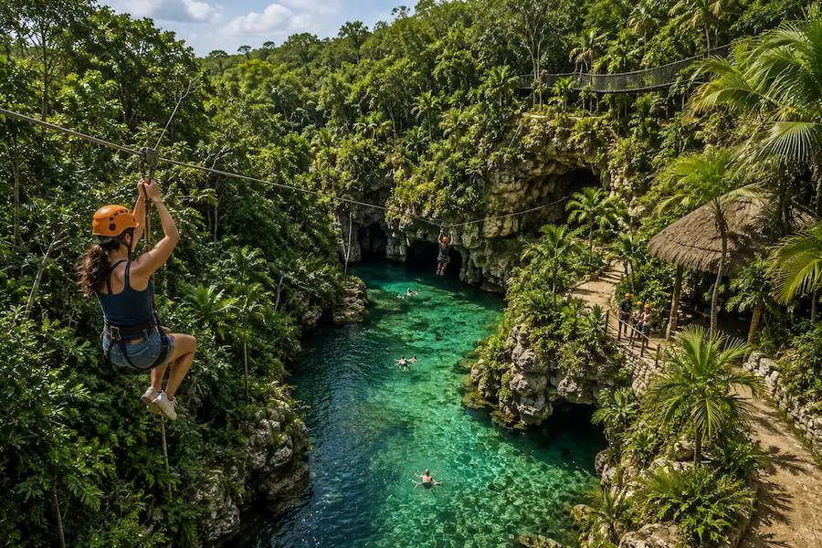
Un parc d'aventure spectaculaire mêlant tyroliennes au-dessus de la jungle, grottes, rivières souterraines et parcours en véhicules amphibies.
🪂 Les circuits de tyroliennes traversent la végétation et permettent d'enchaîner plusieurs parcours à différentes hauteurs.
💧 L'expérience continue sous terre avec des rivières, grottes et formations rocheuses naturelles.
💡 Un des parcs les plus impressionnants à intégrer à un séjour sur la Riviera Maya.
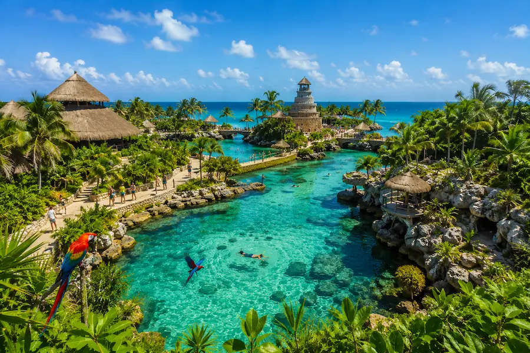
Un immense parc mêlant nature, culture mexicaine, rivières souterraines, faune et spectacles dans un environnement tropical.
🌿 Xcaret combine espaces naturels, baignade, découverte culturelle et nombreuses expériences réparties dans un vaste domaine.
💡 Le parc peut facilement occuper une journée complète et constitue l'une des grandes expériences de la Riviera Maya.
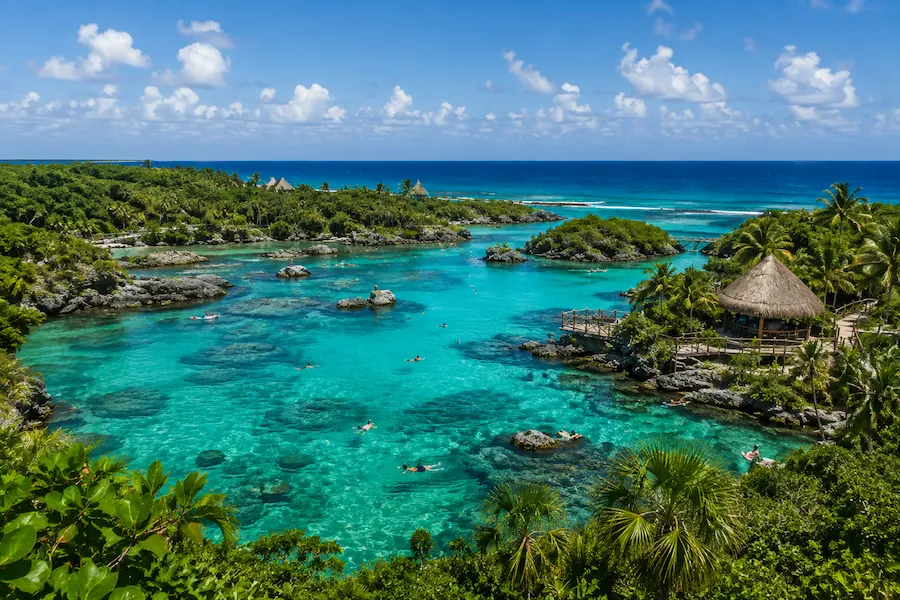
Un parc naturel aquatique construit autour d'un immense lagon où se rencontrent eaux douces et eaux marines.
🐠 Snorkeling, baignade, rivière, végétation tropicale et activités en plein air composent une expérience beaucoup plus naturelle qu'un parc aquatique classique.
💡 Il se combine facilement avec Tulum ou d'autres étapes de la Riviera Maya.
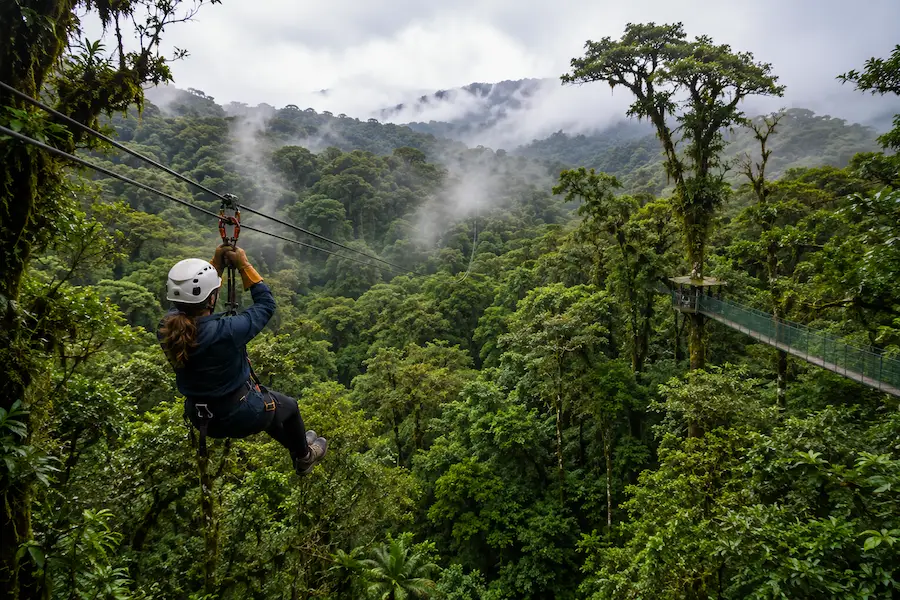
La forêt nuageuse de Monteverde est devenue l'un des hauts lieux mondiaux des tyroliennes et des parcours suspendus au-dessus de la canopée.
🌳 Tyroliennes, ponts suspendus et parcours dans la forêt permettent de découvrir la canopée sous un angle spectaculaire.
💡 Monteverde est particulièrement intéressant pour combiner aventure, biodiversité et paysages naturels au cours d'un même voyage.
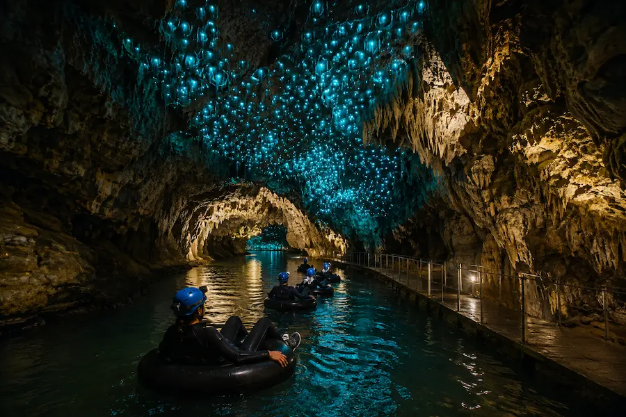
Un univers de grottes, rivières souterraines et formations naturelles où certaines activités transforment l'exploration en véritable parcours d'aventure.
🕳️ Descente en grotte, progression dans l'eau et parcours souterrains offrent une expérience très différente des parcs traditionnels.
✨ Les célèbres vers luisants de Waitomo donnent aux cavités une atmosphère particulièrement spectaculaire.
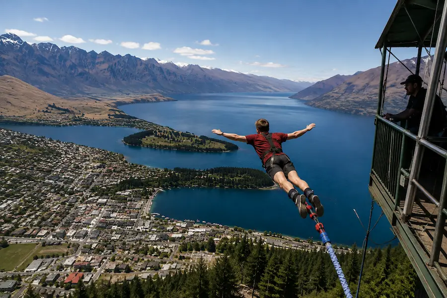
Une destination devenue mondialement célèbre pour les activités à sensations dans un décor de montagnes, lacs et vallées spectaculaires.
🪂 Sauts, tyroliennes, jet boat et nombreuses activités permettent de construire plusieurs journées entièrement consacrées à l'aventure.
💡 Ici, ce n'est pas un seul parc fermé qui fait l'expérience : c'est toute la destination qui fonctionne comme un immense terrain d'aventure.
Un parc peut être bien plus qu'une simple activité au cours d'un séjour. Certains resorts, parcs aquatiques, zoos ou expériences d'aventure peuvent justifier à eux seuls une étape de plusieurs jours ou même devenir le point de départ d'un voyage.
Sur Vidolta, les parcs sont progressivement reliés aux destinations qui les entourent afin de vous aider à préparer votre séjour, découvrir les activités à proximité et construire un voyage autour de l'expérience qui vous attire.
Commencez par le type d'expérience que vous recherchez : grands parcs d'attractions, univers aquatiques, découverte animalière ou aventure en pleine nature. Vérifiez ensuite la destination, le temps nécessaire sur place et les autres expériences accessibles dans la région.
Les grands resorts comme Walt Disney World ou Universal Orlando peuvent facilement occuper plusieurs journées. D'autres destinations comme Europa-Park, Disneyland Paris, Tokyo Disney Resort ou les grands complexes de Yas Island peuvent également devenir une partie importante d'un séjour.
Lorsque des offres pertinentes sont disponibles, Vidolta peut proposer des liens vers des billets, activités ou hébergements afin de faciliter la préparation du séjour. Les possibilités varient selon les parcs et les destinations.
Oui. Les établissements sont progressivement reliés aux destinations Vidolta correspondantes afin de découvrir les incontournables, les activités à proximité et les autres expériences à intégrer au voyage.
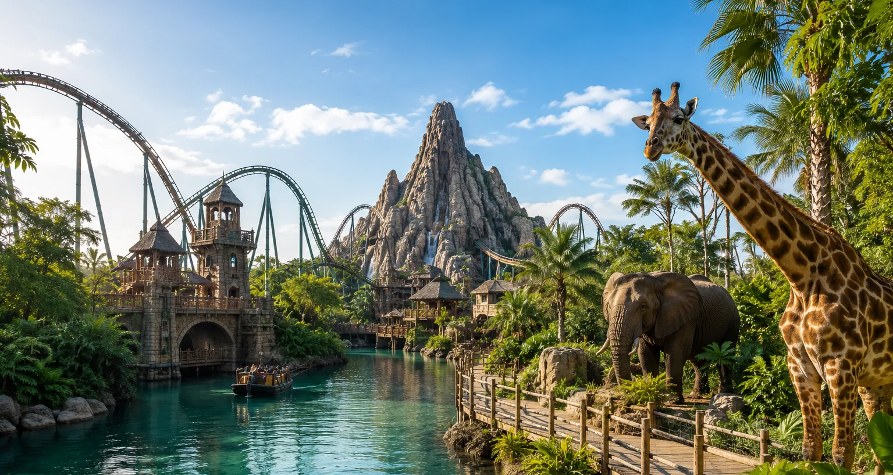
Parcs mythiques, aventures dans la jungle, univers aquatiques ou rencontres avec la faune : choisissez l'expérience qui vous fait envie et découvrez la destination qui l'entoure.
🌎 Explorer les destinations